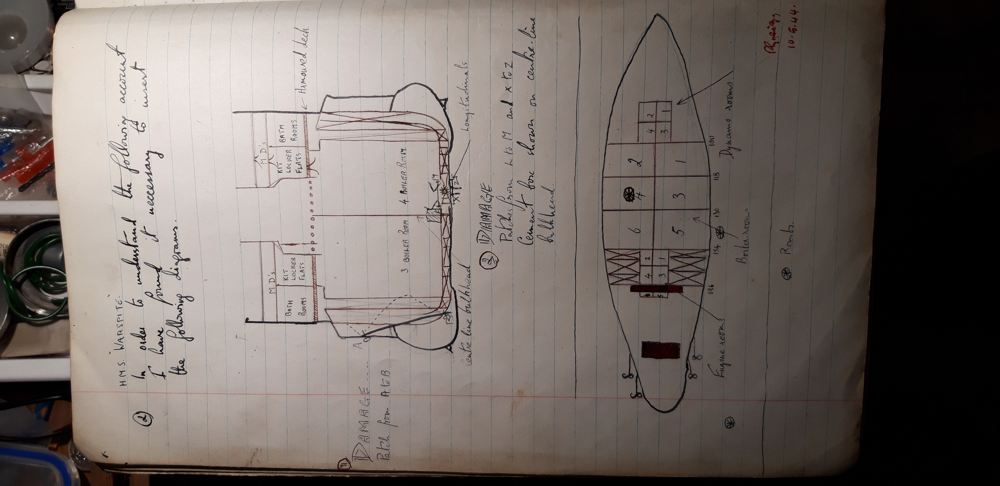

Many ships in the Royal Navy have fine records but it would be difficult to find one with which that of "Warspite" could not compare favourably. From the day that the first "Warspite" sailed in Drake's Cadiz expedition to this day involves a period of three and a half centuries; during this time the seven ships that have borne the name "Warspite" have built up this record.
The name of the ship is derived from the Anglo-Saxon word warsforights meaning woodpecker; the crest of the ship has always been a woodpecker.
The first "Warspite", 148 tons and 36 guns, was launched in 1596. Sir Walter Raleigh served in her as a rear-admiral in the Cadiz expedition which I have already mentioned. This was her only major action but she continued to serve in the fleet for many years.
The next "Warspite", displacing 898 tons and carrying 74 guns, was launched in 1666 at Blackwall. Having taken part in fifteen engagements including the Battle of the Sole Bay in 1672 and the Battle of Sohoonveldt in 1673, she was completely rebuilt 35 years later. The ship saw further action until in 1772 she was paid off
The third Warspite, 1580 tons and 74 guns, was completed just in time to take part in the destruction of De la Clue's fleet off Lagos Bay. A year later, in 1759, she was prominent in the Battle of Quiberon Bay being responsible for the capture of the French flag-ship "Temeraire".
In 1807 a fourth "Warspite", approximately the same size as her predeccessor, was launched at Chatham. She was very active during the remaining eight years of the Napoleonic war; in 1810 she took part in the action off Toulouse and three years later she captured several American privateers which had been menacing British shipping. The rest of her sea-going time was spent in the Mediterrannean and the West Indies where she served as a 30 gun frigate. In 1862 she was taken over by the Marine Society for use as a training ship; finally she was destroyed by fire. To replace her loss the 1485 ton ship "Conqueror" was renamed "Warspite" and presented to the Marine society. She also was destroyed by fire some forty years later.
In the meantime (1884) a sixth "Warspite" had been launched. A cruiser of 8,400 tonscarrying four 9.2" and 10 6" guns; she was never able to use her armament in action owing to the exceptional peacefulness of Queen Victoria's reign. Having taken part in the Jubilee Review she was paid off and placed on the sale list in 1902.
The present "Warspite" was launched at Devonport on the 20th November 1913 by Mrs Austen Chamberlain. She was completed at a cost of over 3 million pounds with a displacement of 31,000 tons, carrying 8 15", 14 6" and 2 3" (H.A.) guns, she and her sister ships were the largest and most powerful battleships afloat at that time. In addition she carried 4 torpedo tubes; her 75,000 H.P. gave her a speed of 25 knots.
In 1915 she was ready for service and she straightway joined the 5th Battlesquadron of the Grand Fleet. At Jutland her stearing gear jambed and this unfortunate accident nearly proved fatal. She completed tow large circles; close under Valiant's stern to start with she very nearly collided but continued under the concentrated fire of several enemy battleships. Sustaining 13 direct hits by 11" shells she miraculously managed to limp back to Rosyth. One officer and 7 men were killed. Her repairs were not hurried because since Jutland the High Seas Fleet did not appear again; she saw further action in the Great War.
"Warspite" was with the Atlantic fleet for the immediate post-war period. In 1924 she was laid up for a large refit at Portsmouth. In 1926 she was sent out to the Mediterrannean under the command of Capt. Chetwoode C.B., C.B.E. There she served as flagship to the C in C, Sir Roger Keyes. In 1925 she struck an uncharted pinnacle rock off Skiathos; the damage neccissitated dockyard repairs so she sailed to Malta. A year later she returned to Portsmouth where she was paid offand re-commissioned. Back in the Mediterannean she again served as flagship, this time wearing the flag of Admiral Sir Frederick Field.
In May 1930 she was transferred to the Atlantic fleet subsequently flying the flags of Admiral Little, Admiral French and Admiral Colvin.
Three years later she paid off for refit and reconstruction at a cost of over 2.5 million pounds. She was re-boilered; her original 18 boilers ere replaced by 6 of a more modern pattern. This enabled her to maintain her original peed of 25 knots. In addition to building up the superstructure she was fitted up with protective armour over the engine rooms, boiler rooms and magazines. She was then equipped with H.A. funs, pom poms, machine guns and 2 6" torpedo tubes. Hangars and cranes were constructed to enable her to carry 4 planes. When she recommissioned in July 1935 she was practically a new ship.
"Warspite" now sailed for Malta where Admiral Sir Dudley Pound transferred his flag from "Bahrain". She was recalled to the Home Fleet at the beginning of this war. Her first test was at Narvik; after Captain Warburton-Lees's heroic action there weere still a large enemy destroyerforce in the fjord. With a destroyer escort Warspite sailed up the fjord on April 13th 1940. The result of the action was 7 German destroyers sunk and several others damaged beyond repair. Much credit was due to "Warspite"'s observation aircraft.
On Italy's entry into the war Warspite went back to her old beat as Mediterrannean flagship, this time under C in C Admiral Sir Andrew Cunningham. In July 1940 she was in action off Calabria; her first meeting with the Italian fleet was, as her Gunnery Officer described it, "a long range surface action against the fleeing enemy fleet".
She started her career as a bombardment ship in August 1940 when she bombarded Reggio. When Mussolini invaded Greece she went to her ally's aid by bombarding Vadona (December). She then returned to assist the eighth army by bombarding Bardia and Tripoli. But in the meantime "Warspite" had taken part in the Great Battle of Matapan. Here in company with Barham, Valiant and Formidable she was personally responsible for sinkin one "Zara" class cruiser and one destroyer. The cruisers and destroyers completed the destruction.
In May of the same year she was sent to Crete for two reasons: 1. to cover the evacuation and 2. to try to draw the German air attack on her. She did the latter almost too successfully; her condition was poor and she was in need of a refit. This she undertook at Bremeston U.S.A. having sailed accross the Indian and Pacific oceans to get there.
In September 1942, nearly 16 months later, she lay off Madagascar; the threat of her guns was sufficient to enforce the initial landings without her actualy firing a single round. "Warspite" then returned to the Mediterrannean to cover any Allied landings. On July 7th she was ordered to bombard Catania; this she did successfully. When the Italian fleet surrendered "Warspite" had the privilege of escorting it into Malta.
The day before the invasion of the Italian mainland she sailed through the Messina Straits and pounded fun positions along the Reggio-Calabria coast.
Then came Salermo. The Fifth army were in a very precarious position; there is no doubt that the naval bombardment played a large part in the victory. Warspite was hit by one of the new glider bombs, two near misses also did much damage. She was unable to carry on under her own steam but tugs assisted her to return to Malta. Temporary repairs were carried out and soon she was fit ot sail to Gibralter under her own steam. Here it was found that the damage was rather more than expected. She received further repairs and then proceeded to Rosyth dockyard. On the 1st May 1944 "Warspite" sailed to Scapa Flow to work up bombardment exercieses; by now she is ready to take part in the largest invasion in History - the Second Front which has yet to be launched.
In order to understand the following account I have found it necessary to insert the following diagrams.
The damage received at Salerno was caused by three glider bombs. The first was a direct hit which penetrated no.4 Boiler room and exploded there. The second was a very near miss (some hold the opinion that it actually hit the ship) amidships abreast the bulge on the starboard side. The third bomb was a miss on the starboard side aft.
When the bomb exploded in no.4 B.R. the adjacent B.R.s nos.2, 3 and 6 flooded almost immediately. Soon no.5 Boiler Room flooded but the starboard engines continued at slow. Half an hour after the ship had been hit no.1, the last boiler-room, filled with sea water and all steam failed. The diesel dynamos, however, still kept going. The near miss aft caused slight damage which neccissitated the steering to be shifted from main steering to the tiller flat.
The state of the ship soon became very serious. About 5000 tons of water was shipped; the draught increased by 5 feet and there was a list of 3 degrees which showed no signs of decreasing. Radar was out of action.
The hit (or very near miss) on the starboard side had not only caused the last B.R. to be flooded but it had wrecked the hydraulic suction. This bomb did almost more permanent damage than the one on the port side, though until the ship reached Gibraltar the full extent of its damage was not realised. The bilge plating was split verically about 148, 145 and 138 stations causing holes about 22' in length extending from the rubber at the knuckle of the main bilge to about 6' below the bilge keel. General buckling of the main bilge (126-154) and the fracturing of the bilge keel (130 - 150) were further results.
I will not go into detail about the damage caused to the structure by the bomb on the port side. Suffice to say that it penetrated nearly vertically down through the hangars, ward-room, galley, stokers mess deck, stokers K.L.F. into no.4 B.R. Apart from the jagged holes on each of these decks the blast of the explosion shook loose 8 tap rivets in the boundary angle bar of "B" turret and about the same number in the boundary angle bar of "X" turret. No4 B.R., of course, was wrecked, damage was caused to the centre line bulkhead and A, B and C straches were severely buckled. [It is not sure whether the bomb exploded inside or outside the ship.]
American tugs towed the ship back to Malta where she was temporarily made seaworthy. No.1 B.R. was still in good condition. After 2 hours steaming towards Gibraltar, however the ship was unable to carry on under her own steam. She was towed to Gibraltar. Here she entered dock; a rather thin patch was riveted on the starboard bulge and the hole in the bottom of the ship was patched up. A cement box was fitted either side of the centre-line bulkhead. In all the repairs were executed very efficiently. The ship then sailed homewards.
At Rosyth a large number of minor repairs were carried out. By the end of April the ship was considered fit enough for bombardment purposes.
On May 1st "Warspite" proceeded to Scapa Flow; this was the beginning of her short but extensive working-up period. During the day H.A. sleeve-target practices were carried out. Results were fair. In fact much credit goes to the Gunnery department who had been busy training new crews during the previous week. Dummy runs had been used but this was the first actual practice firing.
The ship spent under 48 hours at Scapa and then sailed south towards the Clyde. On the way Indirect firing, in company with H.M.S. "Trobisher", was carried out. 20 rounds of 15" 3/4 charge shells were fired. Another H.A. sleeve target practice was completed. The ship then sailed up the Clyde and anchored at Greenock. A few days later, when oiling and provisioning had been finished, we left Greenock to carry out another 15" Bombardment (H.E.) exercise; again 20 rounds were fired and this time the results were more successful. Ancoring at Lamlash we stayed there for a day and then returned to Greenock. During all this period the H.A. armament were kept very busy. Dummy runs (Aircraft and E-boat) were frequently practiced at sea and in harbour.
A week later we turned north for Scapa. Here the gunnery officer wanted to carry out some star-shell shoots. The first night everthing was set but presumably the weather was unsatisfactory as it was postponed. In the meantime officers from "Rodney" came aboard to direct a full-scale Damage control exercise. This was fairly satisfactory but the Captain had several criticisms to offer when he next addressed the Ship's Company.
When we left Scapa to return eventually to Greenock every form of practice was executed. Star-shell, H.A. at winged target, 4" at High Speed Towed targets, all took their turn.
The ship was then deemed ready to take part in the full-scale Bombardment excercise in company with C.S.2. This has just been completed.
Signed by the Commanding Officer of H.M.S. Warspite on 27-06-1944
Operation "Neptune" was the actual assault on D.day, whereas operation "Overlord" comprised all air attacks carried out beforehand. Plans for the disruption of enemy communications, airfileds and planes and in fact the German War Effort in general, must have been conceived in the early days of 1943 for over eighteen months the R.A.7 and Americal Air Forces had been painstakingly executing these plans; too much praise cannot be given to these men who paved the way for the final assault. Not a stone was left unturned; vital bridges were demolished, essential railway communications were strafed and above all the allied Air forces gained complete superiority in the air.
One of the most important things to note about the invasion was the complete tactical suprise which was achieved. Operation "Overlord" played a large part in this. It has been said that for every bomb dropped inside the invasion area, two were dropped ouside it. To bomb all railways, airfields etc, essential to the Germans for ???? off an attack on Normandy would have been easy but we would then have exposed our intentions; unless the whole coastline of France had been constantly under air attack the invasion would have inevitably been a disaster. The work of the Allied Air Forces can be divided into three headings. 1. The Destruction of the Luftwaffe. 2. The Destruction of all enemy Communication, essential to his collecting his troops at the invasion point. 3. Keeping the enemy on the"qui vive", all up and down the Western coast, from Norway to the South of France. The first task was achieved by the systematic bombing of airfields and aircraft factories and, of course, by hotly engaging his planes whenever they took to the air. The second task was performed by precission bombing, brought to perfection by day by the U.S.A.A.7 and by night by the R.A.7. The third task had very much the same effect as small amphibious operations. Giant attacks on railway and road centres all along the coast of France kept the enemy guessing as to where the final blow was to fall.
So much for "Operation Overlord", the stage was now set for the actual landing of troops or "Operation Neptune" as it was called.
The general plan was as follows: The Supreme Commander was confident that complete secrecy had been obtained; there was therefore nothing to be gained by choosing a difficult and thus unexpected beach on which to land. The coast of Seine Bay, from Carentam (???) to Ouistrehem (at the mouth of the Oine (???), was selected; the main advantage here was that the beacheads are very accessible; the disadvantage, in reality not important, was that it would mean operating accross the widest portion of the English Channel. From bitter experience the Allies had now learnt the importance of airborne troops and the confusion they could create behind the enemy lines. The invasion began with unopposed landings of airborne troops at 0200 Tuesday 6th June. These were supported later by seaborne troops of the first U.S. Army (General Simpson U.S.A.) and the Second British Army (General Dempsey) on selected bridgeheads between Carenton and Ouistrehem, the former at Sain Martin de Varreville and Saint Laurient, eight miles north-west of Bayesue, and Vieerville, to the west of it, and the latter (50th division) at Celles(???), seven miles north-east of Bayeux, at Courseulles (3rd Canadian division), six miles further east, and at Ouistrehem (3rd division), which is about eight miles N.N.E. of Caen. It will be noticed that these landings did not involve the capture of any large port which could be used for disembarking reinforcements. Broadly speaking the plan was that the American forces should fight ftheir way inland and then sweep across to the west and cut off the Cherbourg Peninsular. The assault forc approached the coast through 10 channels swept by 110 minesweeping flotillas. The navigation of these flotillas was almost perfect due to the fact that they were using the new Q.H. Radar set, a short range set which is extremely accurate.
The whole invasion can be divided into two parts: the American or Western assault and the British and Canadian or Eastern assault. Each was escorted by a task force and supported by a Bombardment force. The western task force, covering and convoying the American assault forces, consisted of:
The Western Bombardment forces (C and A) was composed of the U.S. ships "Texas" (Rear Admiral Bryant), "Nevada", "Tuscaloose" and "Quincey" and H.M. Ships "Glasgow", "Enebus", "Enterprise", "Hawkins" and "Black Prince", H.N.M.S "Soemba" and the French cruisers "Montealon" and "Leygues", with 17 U.S. destroyers and 3 Hunt class.
The Eastern Task Force, covering the Second Army's assault, was commanded by rear Admiral Vian in H.M.S. "Seylla" (with the army commander and Air-Vice Marshal Coningham i/c Second Tactical A.7.) It consisted of:
The accompanying Bombardment forces D, E and K was composed of H.M. ships "Warspite", "Ramillies", "Mauritius" (Rear Admiral Patterson c.s.2), "Arethusa", "Danae", "Roberts", "Belfast" (c.s.10), "Diadem", "Orion", "Ajax", "Argonaut" and "Emerald", with H.N.M.S. "Flores" and O.R.P. "Dragon", 26 Fleet destroyers and H Hunts, while H.M. ships "Rodney", "Sirius", "Bellona" and "Nelson" were in reserve.
The above gives a good idea of the vast naval organisation of which "Warspite" formed a part. Her job, along with all the bombardment forces, was to support the assault forces with a tremendous preparatory bombardment at dawn on D.day and then, throughout the following days, to be at the "beck and call" of the Army. At dawn, in a position about 8 miles offshore, near the Mouth of the Seine, we opened fire on enemy gun emplacements. An attack was made on us by E. boats but a few rounds of 15" soon made them retreat at full speed. Some 6" shell splashes were observed close to the ship but none were really dangerously close. Considering the extreme range at which the enemy's guns were firing, their shooting was pretty accurate. Making use of the superior range of our 15" guns we opened the range and finally silenced this shore battery. During the day we frequently came to single anchor, presumably to obtain more accuracy in our bombardment. On the evening of D.day + 1 we left and returned to Portsmouth to re-ammunition. By this time both "Rodney" and "Lebron"(???) had arrived on the scene giving the enemy a terrific battering, sometimes at inshore positions at a range of nearly 40,000*. On passage across the channel (a matter of nearly 100 miles) we met many tugs towing the secret "gooseberry's" of which I will speak more later. Having re-ammunitioned, on D.day + 3 we returned hurriedly, this time to the Western or American sector of the front. As it happened our fire was not required that evening and we spent the night with the rest of the fleet at anchor. There was considerable enemy aircraft activity and the barrage put up by the fleet was most impressive; very little damage was done to the fleet from what I could see. This was the first time we had fired our A.A. armament. On the whole I was amazed at the lack of enemy air opposition especially on D. day itself. The next day was spent in bombarding; in the evening we returned to Portsmouth for two reasons: firstly our ammunition was getting low and secondly our guns were worn out. In any case the ranges were extreme and could be reached far easier by the 16" guns of "Rodney" and "Kelsoe"(???). A day was spent at Portsmouth and it was then decided that we should proceed to Rosyth, through the Straits of Dover, in order to get the 15" guns changed. Hands were closed up for action stations all night as we passed through the Straits. The night passed uneventfully but at about 0700 in a position off the Kentish Knock, we had the misfortune to explode a mine which was presumably lying on the bottom. The damage done was not great but being right under our stern both port screws were put out of action and in consequence the speed was reduced very considerably.
So much for the part played by "Warspite" during the Second Front
Several new and secret inventions wree put into practice during this invasion. The first and foremost being the prefabricated harbours formed by gooseberries (huge 6,000 ton concrete caissons which could be placed in position and sunk at any required moment) and mulberries (old vessels which were sunk as blockships). It must be remembered that until Cherbourg was captured the Allies had no port with which to disembark reinforcements, supplies and in fact the innumerable things that are essential to a modern army. The weather was not good and the American prefabricated harbour was very exposed. The British one was more protected owing to the Calvaclos(???) reef. "Pluto" was the code name for an oil pipe which was laid across the channel, it must have been a vast undertaking stretching as it did, over 100 miles of sea. This reduced transport by a considerable amount, the British pre-fabricated harbour was used on a vast scale, for more troops and supplies passing through it than many a natural(???) port. Owing to one of the worst June gales for many years the American project was destroyed; this emphasised even more the importance of this prefabricated harbour to the British sector of the front.
Even after Cherbourg had fallen this 'harbour' was still used, as it was some time before the damage wrought by the Germans was repaired.
The whole invasion was undoubtedly a masterpiece in planning, administration and execution. The complete flexibility can be shown by the fact that the operation was postponed by twenty four hours, at the very last moment.